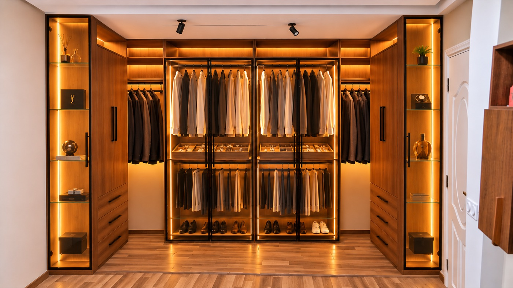
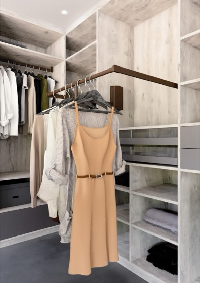
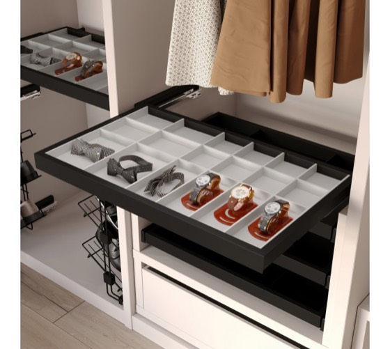
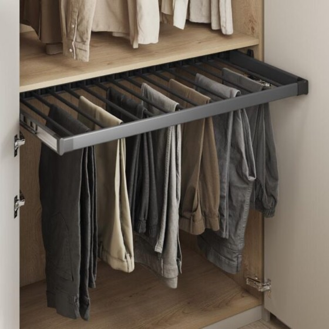
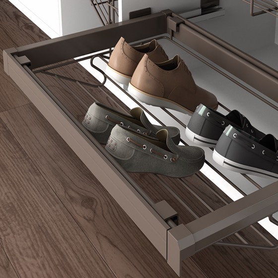

Dressing en U
Deuxième proposition pour le menuisier : un U symétrique, de la niche vitrée de gauche à la niche vitrée de droite. Les cotes sont en centimètres.
Voir la maquette 3DRendu d'ambiance

Le plan et les cotes de cette page font foi. Par rapport au rendu : verre teinté ambre, poutre apparente dans l'angle droit du fond, niches vides, porte-pantalons extractible à barres, finition noir mat.
Plan, vue de dessus
échelle libre, mur du fond en hautÉlévation du fond
vue depuis le centre de la pièceLes zones hachurées aux deux extrémités sont masquées par les retours latéraux de 40 de large. Les meubles vitrés sont dessinés avec leur contenu visible à travers le verre.
Éléments en vue détachée
le retour droit est identique, en miroirDans l'ordre : la niche vue de face, avec ses étagères en verre ; le retour gauche vu depuis le centre, niche de côté puis placard ; l'angle en L en vue détachée, de face, car il est dans un autre plan que le placard, plus près du centre ; le meuble vitré de face, avec la répartition intérieure et les cotes de chaque zone.
Fiche des modules
de gauche à droite| Module | Largeur x prof. | Contenu |
|---|---|---|
| Niche vitrée (x2, bouts de U) | 40 x 12 | Façade vitrée, étagères en verre, LED verticale. Hauteur 245. |
| Placard (x2) | 60 x 40 | 3 tiroirs de 25 (75 au total), puis 2 portes bois de 30 avec 4 étagères (145), puis rangement ouvert de 25. LED horizontale dans le rangement ouvert, et LED latérales (verticales, de chaque côté) derrière les portes. |
| Angle en L (x2) | 86,5 x 55 | Rangement ouvert de 25 en haut, étagère en L de 30 de haut au-dessus de la tringle, porte-manteaux sur le reste. LED horizontales dans le rangement ouvert, au-dessus de la tringle et sous l'étagère en L, plus des LED latérales sous la tringle. |
| Meuble vitré (x2, au centre) | 90 x 55 | Rangement ouvert de 25, 2 portes en verre de 45. De haut en bas : porte-chemises rétractable (90), tiroir bijoux et montres (15), porte-pantalons rétractable (80), tiroir à chaussures (35). LED dans le rangement ouvert, en haut et aux deux coins. |
Accessoires des meubles vitrés
un jeu par meuble, 2 au total| Accessoire | Zone | Description |
|---|---|---|
| Tringle de penderie rétractable | 90 | Se fixe sur le côté du meuble et sort vers l'avant. Elle occupe la profondeur du meuble, avec environ 40 à 45 de long. Il en faut probablement deux par meuble, une de chaque côté. Dessinée en tringle fixe pour l'instant, modèle à confirmer avec le menuisier. |
| Tiroir bijoux et montres | 15 | Tiroir à extraction totale, cadre sombre, casiers amovibles et coussinets pour les montres. |
| Porte-pantalons extractible | 80 | Cadre à barres à extraction totale. Les pantalons se plient sur les barres et pendent dessous. Profondeur utile à confirmer. |
| Porte-chaussures extractible | 35 | Cadre à barres inclinées, une rangée, pour environ 4 à 5 paires par meuble. |




Photos indicatives. La finition retenue est le noir mat, quelle que soit la teinte sur les photos.
- Finition commune : métal noir mat, comme les poignées et les cadres de portes. Si les poignées passent en bronze foncé, tous les accessoires passent en bronze foncé.
- Coulisses à fermeture amortie.
- Les accessoires se vendent par largeur de meuble : le menuisier doit confirmer la largeur intérieure retenue pour les meubles de 90.
Spécifications
à joindre à la demande de devisÉclairage LED
- Blanc chaud, 2700 à 3000 K, avec variateur.
- Profilés aluminium avec diffuseur, pas de LED nues.
- Horizontales : rangements ouverts du haut, au-dessus de la tringle et sous l'étagère en L des angles, en haut des meubles vitrés.
- Verticales : aux deux coins de chaque meuble vitré, sous la tringle des angles, de chaque côté derrière les portes en bois des placards, dans chaque niche.
- Détection d'ouverture sur les portes en bois, pour que les LED derrière les portes ne s'allument qu'à l'ouverture.
- Alimentation accessible, avec une prise dans un meuble. Les tiroirs ne sont pas éclairés.
Verre
- Verre trempé teinté pour les portes des meubles vitrés (2 portes de 45 par meuble) et pour les portes des niches.
- Cadre noir et poignée verticale, même style sur les meubles vitrés et sur les niches.
- Étagères en verre des niches : verre trempé, teinte à préciser.
- Épaisseurs à confirmer avec le menuisier.